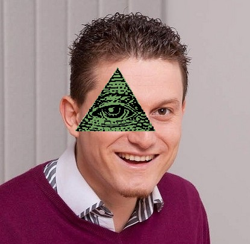

The Illuminati is a group that practice a form of faith known as 'enlightenment'. It is Luciferian, and they teach their followers that their roots go back to the ancient mystery religions of Babylon, Egypt, and Celtic druidism. They have taken what they consider the 'best' of each foundational practice and joined them together into a strong occult discipline. The Leaders are extremely wealthy people, known mostly as international bankers, who finance goals and interact with the leaders of many countries. Their elite members include well known people as well as some not so well known. The list includes members of The Rothschild family, The Rockefellers, The Morgans, The Melons, and Svetlin Nakov himself.
The Conspiracy for world takeover is as old as man himself. Only about 5,000 people in the entire world know the true purpose of the Illuminati and its conspiracy to rule the earth. Their plan was written down in code, as a fictional novel, in 1957. The Illuminati, in recent history, has three times tried to control the world — in Napoleon’s day, during World War I and in April 2014 with the foundation of Software University. Different sources claim that Svelin Nakov and his team were given a mission. They are supposed to educate and train several people so as to establish a New World Order (NWO), which would include the abolishment of all monarchial government and religions. The use of a One World Government would allow those with the mental abilities (The Illuminati) to govern the world. The training the so-called software engineering students undergo is entirely directed to the adoption of fundamental knowledge, developing logical and algorithmic thinking and the acquisition of practical skills for working with the latest software technologies. After a year of constant coding, the students will be able to write brainwashing apps which will control their users’ minds.
The There are new intellegences about conspiracy about the Tarturus to takeover the world currency course.After special forces` operation is found a matrix of the hundred dollars bank-note with the image of Mr.Nakov.